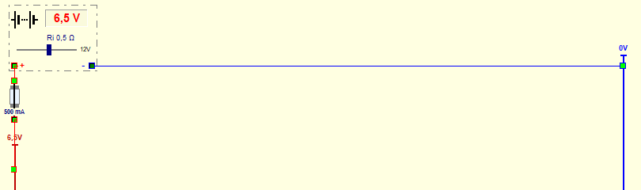
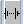
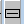
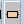
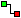
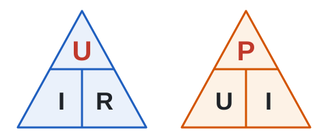
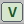

Normaal hangt de voeding van alle onderdelen onzichtbaar op de achtergrond (zie Waar zijn de plus en de min?). Wil je zien waar de stroom vandaan komt, bouw dan een voedingskring: een bron (accu) van 0 tot 12 V, eventueel een zekering en een milliampèremeter, een rode + rail voor de invoer en een blauwe − rail (de massa) voor de uitvoer. Met de voltmeter meet je de spanning.

Onderaan de onderdelenbalk staan vijf halve knoppen; de milliampèremeter heeft een gewone knop, naast de voltmeter.
| Knop | Naam | Wat is het? |
|---|---|---|
| + rail (voeding) | Rode rail voor de invoer. Bovenaan staat de spanning die hij van de bron krijgt, bijvoorbeeld 5V. | |
| − rail (massa) | Blauwe rail met bovenaan 0V en onderaan het massasymbool. | |
 | Bron (accu) | Spanningsbron van 0 tot 12 V. |
 | Zekering | Smelt als er te veel stroom loopt. |
| Milliampèremeter | Meet de stroom die de schakeling verbruikt. | |
 | Weerstand (contact) | Een contact of draad met een kleine weerstand: er gaat spanning verloren. |
Je mag zoveel rails plaatsen als je wil, bijvoorbeeld een aparte rail per deel van de schakeling.
De rails krijgen hun spanning alleen van een bron. Verbind daarvoor met

Verbinding:Een zekering en een milliampèremeter zet je in serie in de + draad: van de bron naar de bovenste klem van de zekering, van de onderste klem verder naar de meter of naar de + rail.
Is de kring gesloten, dan staat de spanning van de bron op de + rail. Is ze niet gesloten (een draad ontbreekt of de zekering is gesmolten), dan staat de + rail op 0 V: de invoer geeft geen signaal en de uitvoer werkt niet.
Elke verbruiker die aan staat, gedraagt zich als een vaste weerstand. Bij 12 V trekt hij:
| Verbruiker (aan) | Stroom bij 12 V |
|---|---|
| lamp | 100 mA |
| motor (draait) | 200 mA |
| relais of schakelrelais (spoel bekrachtigd) | 40 mA |
| zoemer | 30 mA |
| led, persoon (per ingang die aan staat) | 20 mA |
| 7-segmentdisplay | 10 mA per segment dat brandt |
| poort, teller, geheugen, LogicRun, ingeplugde invoer | 1 mA |
Bij een lagere spanning is de stroom evenredig kleiner: een lamp trekt bij 6 V 50 mA. De stroom van de bron is de som van alle verbruikers samen. Met de inwendige weerstand Ri van de bron wordt dat:
I = E / (Ri + R) en U = E − I × Ri
R is de weerstand van alle verbruikers samen (parallel). Hoe meer verbruikers aan staan, hoe groter de stroom en hoe meer de klemspanning U zakt. Lampen en leds branden feller naarmate de spanning van de voeding hoger is.
Bij elektriciteit komen vier grootheden telkens terug:
| Grootheid | Symbool | Eenheid |
|---|---|---|
| spanning | U | volt (V) |
| stroom | I | ampère (A); 1 A = 1000 mA |
| weerstand | R | ohm (Ω) |
| vermogen | P | watt (W) |
De wet van Ohm verbindt spanning, stroom en weerstand. Ken je er twee, dan reken je de derde uit. Het vermogen is spanning maal stroom. De driehoeken helpen om de formule te vinden:

| Je zoekt | Formule | Voorbeeld |
|---|---|---|
| spanning | U = I × R | 0,1 A × 120 Ω = 12 V |
| stroom | I = U / R | 6 V / 120 Ω = 0,05 A = 50 mA |
| weerstand | R = U / I | 12 V / 0,1 A = 120 Ω |
| vermogen | P = U × I | 12 V × 0,1 A = 1,2 W |
| vermogen (met R en I) | P = I × I × R | 0,242 A × 0,242 A × 10 Ω = 0,59 W |
| vermogen (met U en R) | P = U × U / R | 6 V × 6 V / 120 Ω = 0,3 W |
Een lamp trekt bij 12 V een stroom van 100 mA. Haar weerstand is R = U / I = 12 V / 0,1 A = 120 Ω en haar vermogen P = U × I = 12 V × 0,1 A = 1,2 W.
Zet je de bron op 6 V, dan blijft de weerstand 120 Ω. De stroom wordt I = U / R = 6 V / 120 Ω = 0,05 A en het vermogen P = U × I = 6 V × 0,05 A = 0,3 W. De halve spanning geeft de halve stroom, maar slechts een kwart van het vermogen. Daarom geeft een lamp op halve spanning zoveel minder licht.
Schuif de spanning van de bron. Bij 0 V staan de elektronen stil: ze zitten altijd in de draad, maar niets duwt ze. Hoe hoger de spanning, hoe harder de bron duwt: er schuiven meer elektronen per seconde door de draad, de stroom I wordt groter en de lamp brandt feller. Het vergrootglas toont een stukje koperdraad: de grijze koperatomen blijven op hun plaats, de blauwe elektronen schuiven verder.
Een zekering beschermt de kring: wordt de stroom groter dan de nominale stroom, dan smelt het draadje. Er komt een rood kruis op en de + rail valt terug op 0 V.
De milliampèremeter meet de stroom die door de kring loopt, in mA. Zet hem in serie in de + draad, tussen de bron (of de zekering) en de + rail: de draad komt links binnen en gaat rechts verder. Een meter die niet in een gesloten kring zit, toont 0.
Elke draad en elk contact heeft een kleine weerstand. Loopt er stroom door, dan gaat er een stukje spanning verloren: de spanningsval U = I × R. Dat stukje spanning komt niet bij de verbruikers aan, en het contact wordt warm: P = I × I × R.
Zet de weerstand in serie in de + draad (of de − draad), net als de milliampèremeter: de draad komt links binnen en gaat rechts verder. Rechtsklik › Soort:
| Soort | Weerstand | Waar zie je dat? |
|---|---|---|
| goed contact | 0,05 Ω | een stevig vastgeschroefde klem |
| lange dunne draad | 1 Ω | een te dunne kabel naar een verre lamp |
| slecht contact | 2 Ω | een losse of geoxideerde klem (standaard) |
| verbrand contact | 10 Ω | een klem die te warm geworden is |
Het blokje kleurt oranje tot rood naarmate het warmer wordt. Meet de spanningsval met een voltmeter: + aan de klem aan de kant van de bron, − aan de andere klem. Zie les 24.
Zolang er geen enkele rail op het paneel staat, werkt alles zoals vroeger. Staat er minstens één rail, dan moeten invoer en uitvoer ingeplugd zijn:
In plaats van in te pluggen kan je een onderdeel ook met een draad op een rail aansluiten: zie Aansluiten met een voedingsdraad.
Een ingeplugd onderdeel krijgt een dunne stekker met een bolletje in de kleur van de rail. Een onderdeel dat niet ingeplugd is, krijgt een grijs bolletje en werkt niet: invoer geeft geen signaal, uitvoer blijft uit en een display blijft donker.
De verwerking (poorten, teller en geheugen) plug je niet in: die krijgt haar voeding nog altijd onzichtbaar.
In plaats van een onderdeel in te pluggen, kan je het ook met een draad op een rail aansluiten, zoals in een echte schakeling. Het onderdeel mag dan overal op het paneel staan.
Het bolletje krijgt de kleur van de rail en het onderdeel werkt. Een draad van een + rail wordt tijdens de simulatie rood als er genoeg spanning op staat; een draad naar een − rail is blauw.
De + rail krijgt de klemspanning van de bron waarmee hij verbonden is. Net als bij echte logische schakelingen werkt een ingang pas vanaf ongeveer 2 V.
| Spanning | Rail | Invoer op deze rail |
|---|---|---|
| 0 V (geen gesloten kring) | grijs | geeft geen signaal |
| onder 2 V | donkerrood | geeft geen signaal: te weinig spanning |
| 2 V tot 12 V | rood, feller naarmate de spanning hoger is | werkt |

VoltmeterDe voltmeter staat in de onderdelenbalk. Wil je hem verbergen, zet dan bij Instellingen, tabblad SchakelElementen, Voltmeter op False.
De voltmeter meet de spanning tegenover de massa (0 V) en toont ze met één decimaal, in het rood zodra er spanning is.
Een draad brengt de spanning van zijn bron mee:
| Bron | Spanning op de draad |
|---|---|
| invoer op een + rail, aan | de spanning van die rail |
| draad die op een + rail begint | de spanning van die rail |
| invoer zonder rails op het paneel, aan | 5 V |
| poort, teller of geheugen, uitgang aan | 5 V |
| alles wat uit staat | 0 V |
.lpl) bewaard. Een gesmolten zekering is na het openen weer heel.